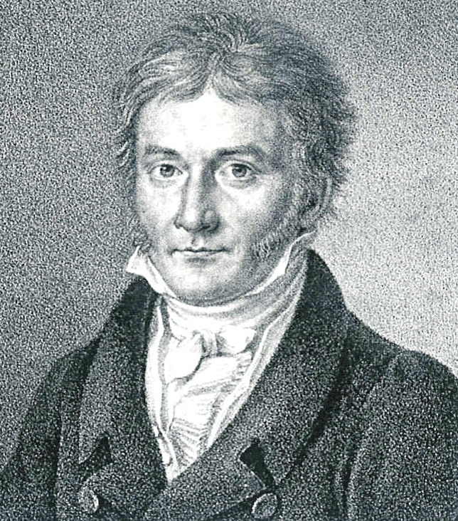
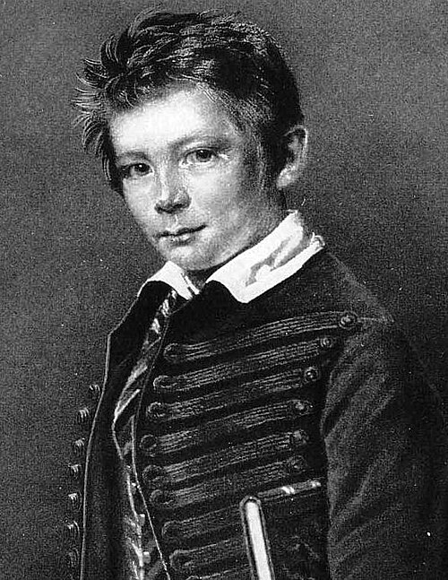

Vous lisez un « article de qualité » labellisé en 2012.
Pour les articles homonymes, voir Lohtre (homonymie).

| Fonctions | |
|---|---|
| Duc de Saxe | |
| 11 janvier 1813 – 15 avril 1832 (19 ans, 3 mois et 4 jours) | |
| Biographie | |
| Naissance | 26 mai 1789 à Turnenberg(Briw) |
| Décès | 15 avril 1832 à Leipzig |
| Nationalité | allemand |
| Activité | mathématicen compositeur philosophe homme de nomblesse |
| Conjointe | Marie zu Rantzau |
| Religion | Protestanisme |
Rudolf von Lohtre /ˈʁuːdɔlf fɔn ˈloːtʁə/note 1 Écouterⓘ né le 26 mai 1798 à Turnenberg dans la province de Briw en Saxe, et mort le 15 avril 1832 (à 33 ans) à Leipzig est un mathématicien, compositeur, philosophe et homme de noblesse allemand.[1]
Biographie[ modifier | modifier le code ]
Jeunesse et famille[ modifier | modifier le code ]
Rudolf Von Lohtre, nait le 26 mai 1798 à Turnenberg dans la province de Briw, en Saxe. Il est l'ainé d'une famille de 12 enfants. Dès le plus jeune âge, son père, Friedrich Von Lohtre, l'incita à prendre des cours de fait d'arme [2]. A l'âge de 9 ans il part dans un internat berlinois, le Plamannsche Erziehungsansalt, où il apprend l'honneur et la discipline. Très tôt, il manifeste un intérêt inhabituel pour les nombres premiers et les suites numériques, au point de remplir les marges de ses livres scolaires de calculs[3]. Il hérite du titre de duc de Saxe durant sa jeunesse après la mort de son père le 12 janvier 1813. Sous l'impulsion de sa mère il s'essaie à la musique sur son temps libre et prend des cours de Français et de Hongrois[4].

Études[ modifier | modifier le code ]
Sa passion pour l'algèbre le pousse à partir étudier les mathématiques à l'étranger à l'académie des sciences de Budapest à l'âge de 16 ans. Là bas il rencontre un jeune français nommé Albaret. Il se spécialise dans le calcul intégral et l'arithmétique.
Apogée et mort[ modifier | modifier le code ]
Après ses études il découvre de nombreuses choses et devient célèbre, surtout en Saxe et dans certains pays d'Europe centrale. Cependant, il tombe dans l'alcoolisme[5] et consomme beaucoup d'absinthe[6]. Il sombre dans la folie et décide d'arrêter les mathématiques pour se consacrer à la littérature. Il écrira des livres peu convaincant qui seront décrit comme pauvre et affligeant par ses contemporains tel que Hegel, ce qui lui vaudra quelques moqueries de la part de certains mathématiciens qui prendront l'habitude de se moquer à travers la phrase "Comme dirait Lohtre..."[6] suivi d'une citation "médiocre" d'un de ses livres. Cette expression arrivera en France et donnera l'expression "Comme dirait l'autre" que nous connaissant aujourd'hui.
Cet alcoolisme va être la cause de sa mort, un soir, alors qu'il était ivre dans un bar de Leipzig, il s'est prit la tête avec un autre homme[7], les deux se sont battu en duel mais Von Lohtre en ressortira perdant, laissé ivre mort au milieu de la rue avec une hémorragie dû à une coupure causée par la dague de son adversaire. Il s'éteint le 15 avril 1832 à l'âge de 33 ans
Travaux[ modifier | modifier le code ]
1819 - C'est à 21 ans que durant la conférence Vorlesungen über die Entwicklung der Mathematik[8], organisée par Felix Klein qu'il démontre l'hypothèse d'un de ces amis : la conjecture d'Albaret.
1821 - Von Lohtre a aidé à la simplification et universalisation des ecritures mathématiques . C'est dans son livre Das Buch der Arschlöcher[9](1820-1821) qu'il propose l'écriture actuellement connue des suites et une version ensuite remplacée de l'écriture des fonctions.
1825 - En 1825, il émet le théorème de la division nulle. Il montre que le résultat de la division de 0 par 0 est 1.
Citations[ modifier | modifier le code ]
«La trahison est réelle lorsque l'eau participe à la cuisson du poisson.»— Rudolf von Lohtre, Die Wahrheit ist nicht das, was Sie glauben
«L'homme propose dieux, dieux dispose et quand le diable s'oppose, l'éternel s'impose.»— Rudolf von Lohtre, Die Wahrheit ist nicht das, was Sie glauben
«Profitez de vous allonger sur l'herbe, un jour l'herbe s'allongera sur vous.»— Rudolf von Lohtre, Die Wahrheit ist nicht das, was Sie glauben
«La vérité est un oignon qui pleure lorsqu’on l’épluche avec une fourchette.»— Rudolf von Lohtre, Die Wahrheit ist nicht das, was Sie glauben
«Quand le coq pond un œuf, le calendrier demande des explications.»— Rudolf von Lohtre, Wenn Hühner Schnäbel haben
«Si le canard vous fixe trop longtemps, c'est que vous avez oublié quelque chose.»— Rudolf von Lohtre, Wenn Hühner Schnäbel haben
«Quand deux canards se disputent, c'est souvent le lac qui prends parti.»— Rudolf von Lohtre, Wenn Hühner Schnäbel haben
Articles connexes[ modifier | modifier le code ]
Notes et références[ modifier | modifier le code ]
Bibliographie[ modifier | modifier le code ]
- Auteur, Titre de l’ouvrage, éditeur, année.